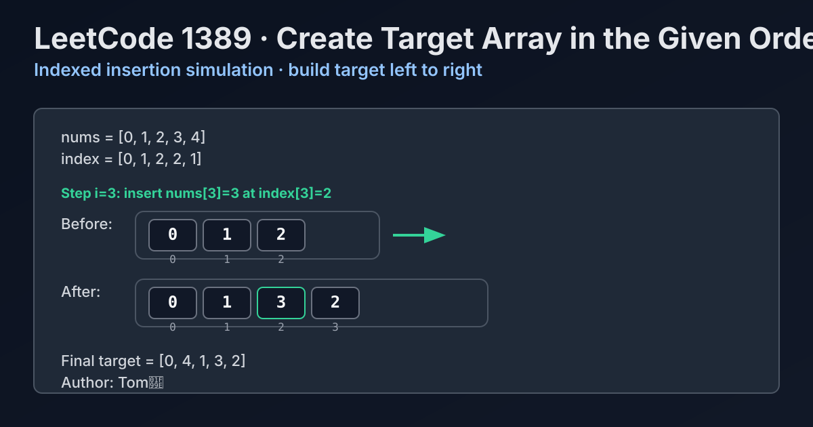

LeetCode 1389: Create Target Array in the Given Order (Indexed Insertion Simulation)
LeetCode 1389ArraySimulationInsertionToday we solve LeetCode 1389 - Create Target Array in the Given Order.
Source: https://leetcode.com/problems/create-target-array-in-the-given-order/

English
Problem Summary
Given arrays nums and index of the same length, build target by processing from left to right and inserting nums[i] at position index[i] each time.
Key Insight
At step i, target already contains exactly the first i numbers in valid order. So performing one insertion at index[i] preserves correctness by problem definition.
Brute Force and Limitations
You could manually shift elements in a fixed-size array for every insertion. It works but is verbose and easy to get wrong with boundaries.
Optimal Algorithm Steps
1) Initialize empty dynamic array/list target.
2) For each i from 0 to n-1, insert nums[i] into target at index[i].
3) Return target.
Complexity Analysis
Time: O(n^2) in the worst case due to element shifts after each insertion.
Space: O(n) for the resulting target array.
Common Pitfalls
- Appending then swapping later (breaks insertion semantics).
- Off-by-one when inserting at the current end.
- Trying to pre-sort by index, which changes required operation order.
Reference Implementations (Java / Go / C++ / Python / JavaScript)
import java.util.ArrayList;
import java.util.List;
class Solution {
public int[] createTargetArray(int[] nums, int[] index) {
List<Integer> target = new ArrayList<>();
for (int i = 0; i < nums.length; i++) {
target.add(index[i], nums[i]);
}
int[] ans = new int[target.size()];
for (int i = 0; i < target.size(); i++) {
ans[i] = target.get(i);
}
return ans;
}
}func createTargetArray(nums []int, index []int) []int {
target := make([]int, 0, len(nums))
for i, v := range nums {
pos := index[i]
target = append(target, 0)
copy(target[pos+1:], target[pos:])
target[pos] = v
}
return target
}#include <vector>
using namespace std;
class Solution {
public:
vector<int> createTargetArray(vector<int>& nums, vector<int>& index) {
vector<int> target;
target.reserve(nums.size());
for (int i = 0; i < (int)nums.size(); i++) {
target.insert(target.begin() + index[i], nums[i]);
}
return target;
}
};from typing import List
class Solution:
def createTargetArray(self, nums: List[int], index: List[int]) -> List[int]:
target = []
for i, v in enumerate(nums):
target.insert(index[i], v)
return target/**
* @param {number[]} nums
* @param {number[]} index
* @return {number[]}
*/
var createTargetArray = function(nums, index) {
const target = [];
for (let i = 0; i < nums.length; i++) {
target.splice(index[i], 0, nums[i]);
}
return target;
};中文
题目概述
给定等长数组 nums 和 index，按 i 从小到大依次把 nums[i] 插入到目标数组的 index[i] 位置，最终返回目标数组。
核心思路
处理到第 i 步时，目标数组恰好包含前 i 个元素的正确顺序。此时按题意执行一次“指定位置插入”，即可保持整体正确。
暴力解法与不足
可以用定长数组手写搬移过程，每次把插入位后的元素右移一格。虽然可行，但实现繁琐、边界容易出错。
最优算法步骤
1）初始化空动态数组 target。
2）遍历 i=0..n-1，在 target 的 index[i] 位置插入 nums[i]。
3）返回 target。
复杂度分析
时间复杂度：最坏 O(n^2)（插入导致后续元素搬移）。
空间复杂度：O(n)（存放结果数组）。
常见陷阱
- 先 append 再调整，破坏“当下插入”的语义。
- 在尾部插入时下标处理错误。
- 企图按 index 预排序后统一放置，违反题目指定的处理顺序。
多语言参考实现（Java / Go / C++ / Python / JavaScript）
import java.util.ArrayList;
import java.util.List;
class Solution {
public int[] createTargetArray(int[] nums, int[] index) {
List<Integer> target = new ArrayList<>();
for (int i = 0; i < nums.length; i++) {
target.add(index[i], nums[i]);
}
int[] ans = new int[target.size()];
for (int i = 0; i < target.size(); i++) {
ans[i] = target.get(i);
}
return ans;
}
}func createTargetArray(nums []int, index []int) []int {
target := make([]int, 0, len(nums))
for i, v := range nums {
pos := index[i]
target = append(target, 0)
copy(target[pos+1:], target[pos:])
target[pos] = v
}
return target
}#include <vector>
using namespace std;
class Solution {
public:
vector<int> createTargetArray(vector<int>& nums, vector<int>& index) {
vector<int> target;
target.reserve(nums.size());
for (int i = 0; i < (int)nums.size(); i++) {
target.insert(target.begin() + index[i], nums[i]);
}
return target;
}
};from typing import List
class Solution:
def createTargetArray(self, nums: List[int], index: List[int]) -> List[int]:
target = []
for i, v in enumerate(nums):
target.insert(index[i], v)
return target/**
* @param {number[]} nums
* @param {number[]} index
* @return {number[]}
*/
var createTargetArray = function(nums, index) {
const target = [];
for (let i = 0; i < nums.length; i++) {
target.splice(index[i], 0, nums[i]);
}
return target;
};
Comments